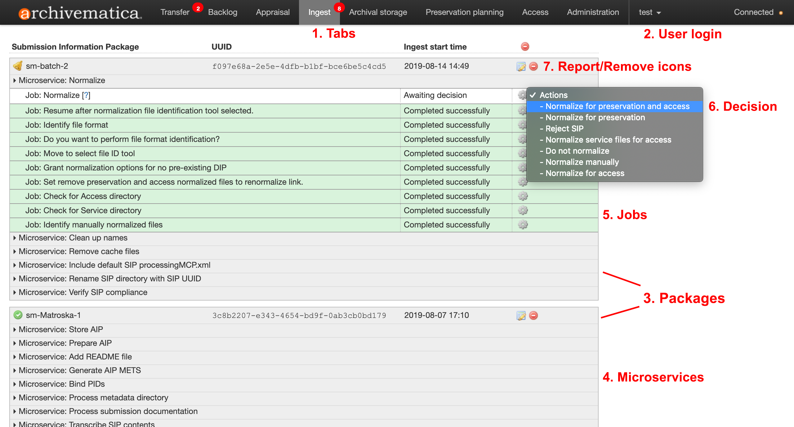

ウェブベースのダッシュボード¶
エンドユーザーの視点に立つと、Archivematicaのすべての機能はWebベースのダッシュボード上で実行され、Webブラウザからログインすることでどこからでもアクセスできます。
{kind=link}

Dashboardは、デジタルアーカイブのための"処理スペース"のようなもので、アーキビストが保管や配布のためにパッケージを送信する前に、Archivematicaのパイプラインを通してデジタル素材のパッケージを移動させることができます。
ダッシュボードの各要素の説明は、以下の通りです。番号は、上の画像を参照してください。
1. タブ¶
ダッシュボードは、複数のタブに分かれており、グレーの部分が現在表示されているタブを示しています。タブ内でアーキビストによるアクションが必要な場合、赤丸でアラートが表示されます。タブの名前（転送、バックログ、評価、インジェスト、アーカイブ保存、保存計画、アクセス、管理）は、OAISモデルとユーザーマニュアルのセクションの両方を参照しています。
2. ユーザーログイン¶
ユーザーのログイン名は、タブの横に表示され、作業処理が完了した際にはそこからユーザーがログアウトします。
3. パッケージ¶
特定の時点において、転送タブとインジェストタブには、それぞれ素材転送または提出情報パッケージ（SIP）を表す、任意の数のパッケージが存在する可能性があります。パッケージは以下のいずれかになります。
進行中。緑の矢印で示されます
判断が必要。ベルのアイコンで示されます
完了。緑色のチェックマークで示されます
失敗。赤色の停止マークで示されます
アーキビストにより拒否。灰色の停止記号で示されます
""赤い"remove"ボタンを使ってパッケージを削除し、ダッシュボードを定期的にクリーンアップするのは良い習慣です。
4. マイクロサービスとジョブ¶
Archivematicaの処理は、いくつかの マイクロサービス を通じて実行されます。マイクロサービスは、ArchivematicaのPythonスクリプトと、Archivematicaシステムにバンドルされているフリーでオープンソースの 外部ソフトウェアツール<external-tools> の1つ以上の組み合わせによって提供されます。
これらのマイクロサービスは、いくつかのジョブに分かれており、ユーザーは、マイクロサービスをクリックして展開することで参照することができます。ジョブ内の歯車のアイコンをクリックすると、新しいブラウザのタブが開き、その特定のジョブで実行されたタスクが表示されます。
5. 決定¶
特定のマイクロサービスは、アーキビストのための決定ポイントをもたらします。ドロップダウンメニューから利用可能なオプションを選択することで、決定が完了します。デシジョンポイントの多くは、 管理タブ で必要に応じて事前に設定できます。
6. 報告／削除のアイコン¶
レポート（紙と鉛筆）アイコンは、転送およびインジェストパッケージに表示され、ユーザーを 記述的な および 権利 メタデータ入力ページにリンクします。（同じアイコンは、 正規化レポート と同様に、フォレンジックディスクイメージ転送メタデータ入力にも使用されます）。
赤い削除アイコンは、ダッシュボードからパッケージを削除します。パッケージは、処理が完了してもしなくても削除できます。完了したパッケージは、ウェブブラウザをスムーズに動作させるための"クリーンアップ"手順として、定期的に削除するのがベストプラクティスです。パッケージを削除しても、パッケージやそれに関連する AIP や DIP は削除 されない ことに注意してください。パッケージが完全に処理されていない場合、ダッシュボードから削除しても、そのパッケージは最後の決定ポイントで未処理のままです。